Chapter 5 Raster data
5.1 Raster data with terra
Support for gridded data in R in recent year has been best implemented with the raster package by Robert Hijmans. The raster package allows you to:
- read and write almost any commonly used raster data format using
rgdal - perform typical raster processing operations such as resampling, projecting, filtering, raster math, etc.
- work with files on disk that are too big to read into memory in R
- run operations quickly since the package relies on back-end C code
The terra package is the replacement for the raster package and has now superceeded it and we will largely focus on terra here. Examples here draw from both Spatial Data Science with R and terra and An introduction to terra in Geocomputation with R. Use help(“terra-package”) in the console for full list of available terra functions and comparison to / changes from raster.
Raster representation is currently in flux a bit in R now with three choices of packages - raster and now terra which we’ve mentioned, as well as stars (spatiotemporal tidy arrays with R).
To familiarize ourselves with the terra package, let’s create an empty SpatRaster object - in order to do this we have to:
* define the matrix (rows and columns)
* define the spatial bounding box
Note that typically we would be reading raster data in from a file rather than creating a raster from scratch. Run through code steps below to familiarize yourself with constructing a RasterLayer from scratch - you can provide a different bounding box for an area of your choosing.
library(terra)
myrast <- rast(ncol=10, nrow = 10, xmax=-116,xmin=-126,ymin=42,ymax=46)
# str(myrast)
isS4(myrast)## [1] TRUEterra uses an S4 slot structure with a SpatRaster object. Simply typing the name of the SpatRaster gives a summary of the object at the console.
myrast## class : SpatRaster
## dimensions : 10, 10, 1 (nrow, ncol, nlyr)
## resolution : 1, 0.4 (x, y)
## extent : -126, -116, 42, 46 (xmin, xmax, ymin, ymax)
## coord. ref. : +proj=longlat +datum=WGS84 +no_defsterra has dedicated functions addressing each of these components:
- dim(my_rast) returns the number of rows, columns and layers
- ncell() returns the number of cells (pixels)
- res() returns the spatial resolution
- ext() returns spatial extent
- crs() returns the coordinate reference system
5.1.1 Exercise
Exploring raster objects
- what is the minimal data required to define a
SpatRaster? - What is the CRS of our
SpatRaster? - How do we pull out just the CRS for our r
SpatRaster? - Building on this, what is the code to pull out just our xmin value in our extent, or bounding box?
5.1.2 Solution
- number columns, number rows, and extent - the
rasterpackage however will fill in defaults if values aren’t provided
t <- rast()
t## class : SpatRaster
## dimensions : 180, 360, 1 (nrow, ncol, nlyr)
## resolution : 1, 1 (x, y)
## extent : -180, 180, -90, 90 (xmin, xmax, ymin, ymax)
## coord. ref. : +proj=longlat +datum=WGS84 +no_defsWe didn’t provide one -
terrauses defaultcrsof WGS84 if you don’t provide acrs
crs(myrast)## [1] "GEOGCRS[\"WGS 84\",\n DATUM[\"World Geodetic System 1984\",\n ELLIPSOID[\"WGS 84\",6378137,298.257223563,\n LENGTHUNIT[\"metre\",1]],\n ID[\"EPSG\",6326]],\n PRIMEM[\"Greenwich\",0,\n ANGLEUNIT[\"degree\",0.0174532925199433],\n ID[\"EPSG\",8901]],\n CS[ellipsoidal,2],\n AXIS[\"longitude\",east,\n ORDER[1],\n ANGLEUNIT[\"degree\",0.0174532925199433,\n ID[\"EPSG\",9122]]],\n AXIS[\"latitude\",north,\n ORDER[2],\n ANGLEUNIT[\"degree\",0.0174532925199433,\n ID[\"EPSG\",9122]]]]"ext(myrast)## SpatExtent : -126, -116, 42, 46 (xmin, xmax, ymin, ymax)# just grab xmin
ext(myrast)[1]## xmin
## -126# we can see that extent is actually a c++ object in the ptr slot of our spatRaster object
# str(myrast)
# names(myrast@ptr)
myrast@ptr$extent## C++ object <000000001955f6d0> of class 'SpatExtent' <0000000014352d80>5.1.3 Manipulating raster objects
So far we just have a container with no values (try plotting what we have so far) - let’s provide values to the cells using the runif function to derive random values from the uniform distribution
#show we have no values
hasValues(myrast)## [1] FALSEvalues(myrast) <- runif(n=ncell(myrast))
myrast## class : SpatRaster
## dimensions : 10, 10, 1 (nrow, ncol, nlyr)
## resolution : 1, 0.4 (x, y)
## extent : -126, -116, 42, 46 (xmin, xmax, ymin, ymax)
## coord. ref. : +proj=longlat +datum=WGS84 +no_defs
## source : memory
## name : lyr.1
## min value : 0.001017156
## max value : 0.9964106An important point to make here is that objects in the terra package (and previously in raster) can be either in memory or on disk - note the value for our spatRaster r of ‘source’. If this were a large raster on disk, the value would be the path to the file on disk.
myrast@ptr$inMemory## [1] TRUEhasValues(myrast)## [1] TRUEmyrast@ptr$nlyr() # we just have one layer in our object## [1] 1# or
nlyr(myrast)## [1] 1terra also provides plot method for it’s classes:
plot(myrast)
We can also overwrite the cell values for our raster:
values(myrast) <- 1:ncell(myrast)
values(myrast)[1:15]## [1] 1 2 3 4 5 6 7 8 9 10 11 12 13 14 15You can access raster values via direct indexing or line, column indexing - take a minute to see how this works using raster r we just created - the syntax is:
myrast[i]
myrast[line, column]How is terra data storage unlike a matrix in R? You can create a matrix with same dimensions and values and compare if you want:
m <- matrix (1:100, nrow=10, ncol=10)
m[1,10]## [1] 91myrast[1,10]## lyr.1
## 1 10myrast[10]## lyr.1
## 1 105.1.4 Reading existing rasters on disk
raster_filepath = system.file("raster/srtm.tif", package = "spDataLarge")
my_rast = rast(raster_filepath)
nlyr(my_rast)## [1] 1plot(my_rast)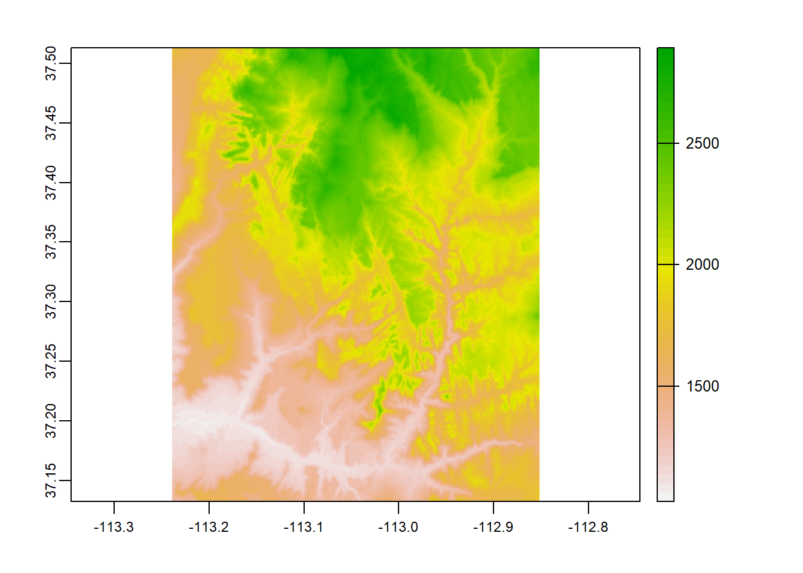
5.1.5 Multiband rasters
The spatRaster object in terra can hold multiple layers (similar to RasterBrick and RasterStack which were two additional classes in the raster package). These layers correspond to multispectral satellite imagery or a time-series raster.
landsat = system.file("raster/landsat.tif", package = "spDataLarge")
landsat = rast(landsat)
landsat## class : SpatRaster
## dimensions : 1428, 1128, 4 (nrow, ncol, nlyr)
## resolution : 30, 30 (x, y)
## extent : 301905, 335745, 4111245, 4154085 (xmin, xmax, ymin, ymax)
## coord. ref. : +proj=utm +zone=12 +datum=WGS84 +units=m +no_defs
## source : landsat.tif
## names : lan_1, lan_2, lan_3, lan_4
## min values : 7550, 6404, 5678, 5252
## max values : 19071, 22051, 25780, 31961plot(landsat)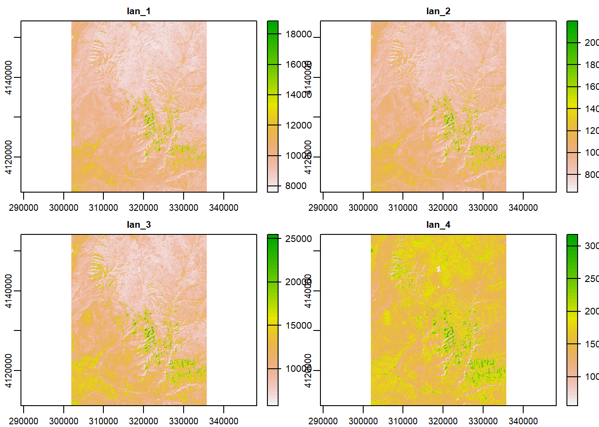
5.1.6 Plotting rasters and vectors with tmap
Bring in boundary and elevation of Crater Lake NP (datasets in Rspatialworkshop package) and plot with tmap
library(Rspatialworkshop)
library(tmap)
data(CraterLake)
raster_filepath <- system.file("extdata", "elevation.tif", package = "Rspatialworkshop")
elevation <- rast(raster_filepath)
map_crlk <- tm_shape(CraterLake) + tm_polygons(lwd = 2)
map_crlkel = map_crlk +
tm_shape(elevation) + tm_raster(alpha = 0.7,palette = terrain.colors(12)) + tm_layout(legend.position = c("left","bottom"),
legend.width = 1)
map_crlkel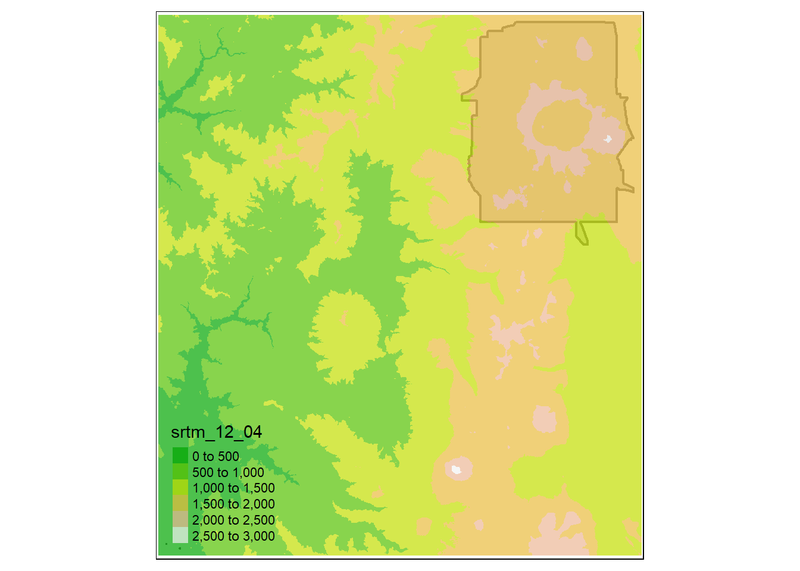
5.2 Raster data with stars
stars works with and stands for spatio-temporal arrays and can deal with more complex data types than either raster or terra such as rotated grids. It should be said though that terra does have improved functionality for using multilayer rasters than raster did.
stars integrates with sf and many sf functions have methods for stars objects (i.e. st_bbox and st_transform) - this makes sense since they are both written by Edzer Pebesma. terra unfortunately has poor / no integration with sf - this is a big issue for me personally and I will likely look to stars long-term for my raster processing.
5.2.1 Read a satellite image
Basic example shown in stars vignette - using the 30m bands of a Landsat-7 image that comes with the stars package:
library(stars)
tif = system.file("tif/L7_ETMs.tif", package = "stars")
ls7 = read_stars(tif)
plot(ls7, axes = TRUE)## downsample set to c(0,0,1)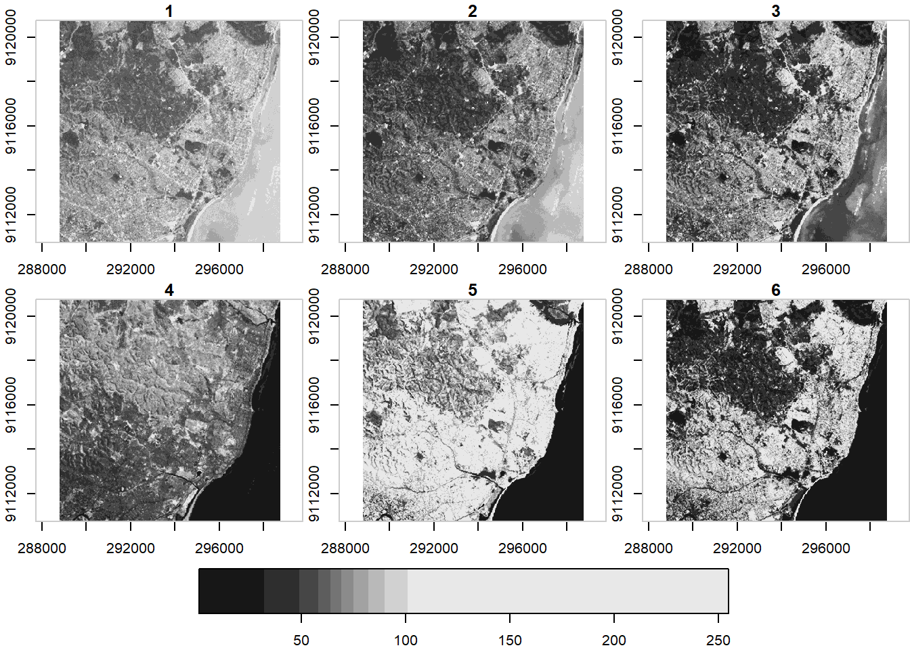
ls7 (landsat7) is an object with 3 dimensions (x,y and band) and 1 attribute
ls7## stars object with 3 dimensions and 1 attribute
## attribute(s):
## Min. 1st Qu. Median Mean 3rd Qu. Max.
## L7_ETMs.tif 1 54 69 68.91242 86 255
## dimension(s):
## from to offset delta refsys point values x/y
## x 1 349 288776 28.5 UTM Zone 25, Southern Hem... FALSE NULL [x]
## y 1 352 9120761 -28.5 UTM Zone 25, Southern Hem... FALSE NULL [y]
## band 1 6 NA NA NA NA NULLNote when we plotted above that the plot method with stars uses histogram stretching across all bands - we can also do stretching for each band indivially:
plot(ls7, join_zlim = FALSE)## downsample set to c(0,0,1)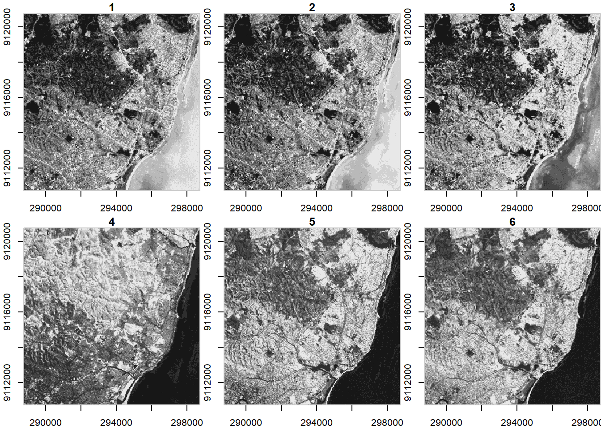
stars uses tidyverse methods spatio-temporal arrays - an example of this is pulling out one band of an image using slice
ls7 %>% dplyr::slice(band, 6) -> band6
band6## stars object with 2 dimensions and 1 attribute
## attribute(s):
## Min. 1st Qu. Median Mean 3rd Qu. Max.
## L7_ETMs.tif 1 32 60 59.97521 88 255
## dimension(s):
## from to offset delta refsys point values x/y
## x 1 349 288776 28.5 UTM Zone 25, Southern Hem... FALSE NULL [x]
## y 1 352 9120761 -28.5 UTM Zone 25, Southern Hem... FALSE NULL [y]This gives us a lower-dimensional array of just band 6 from the Landsat7 image.
5.3 Raster Operations
5.3.1 Projecting
For spatial operations in R, raster or vector, we always need to make sure objects are in an appropriate CRS and in the same CRS as one another.
We’ll use the elevation data and Crater Lake polygon feature in the Rspatialworkshop package for this example.
library(Rspatialworkshop)
data(CraterLake)
raster_filepath <- system.file("extdata", "elevation.tif", package = "Rspatialworkshop")
elevation <- rast(raster_filepath)5.3.1.1 Exercise
- Find the projection of both the Crater Lake spatial polygon feature and the elevation raster
- Are they the same? Should we project one to the other, or apply a new projection?
5.3.1.2 Solution
- Check the CRS of each feature and test for equality
crs(elevation)## [1] "GEOGCRS[\"WGS 84\",\n DATUM[\"World Geodetic System 1984\",\n ELLIPSOID[\"WGS 84\",6378137,298.257223563,\n LENGTHUNIT[\"metre\",1]]],\n PRIMEM[\"Greenwich\",0,\n ANGLEUNIT[\"degree\",0.0174532925199433]],\n CS[ellipsoidal,2],\n AXIS[\"geodetic latitude (Lat)\",north,\n ORDER[1],\n ANGLEUNIT[\"degree\",0.0174532925199433]],\n AXIS[\"geodetic longitude (Lon)\",east,\n ORDER[2],\n ANGLEUNIT[\"degree\",0.0174532925199433]],\n ID[\"EPSG\",4326]]"st_crs(CraterLake)## Coordinate Reference System:
## User input: WGS 84
## wkt:
## GEOGCRS["WGS 84",
## DATUM["World Geodetic System 1984",
## ELLIPSOID["WGS 84",6378137,298.257223563,
## LENGTHUNIT["metre",1]]],
## PRIMEM["Greenwich",0,
## ANGLEUNIT["degree",0.0174532925199433]],
## CS[ellipsoidal,2],
## AXIS["geodetic latitude (Lat)",north,
## ORDER[1],
## ANGLEUNIT["degree",0.0174532925199433]],
## AXIS["geodetic longitude (Lon)",east,
## ORDER[2],
## ANGLEUNIT["degree",0.0174532925199433]],
## ID["EPSG",4326]]st_crs(CraterLake) == crs(elevation)## [1] FALSEst_crs(CraterLake)$wkt == crs(elevation)## [1] TRUE- They share the same EPSG code, but are parameterized slightly differently for each - the
crsfunction interradoes not include theinputlist item thatst_crsinsfdoes - they are the same though as demonstrated when specifying thewktitem only fromst_crs(CraterLake) - Each feature is in WGS84, an unprojected CRS - for most operations, we would prefer to have them in a projected CRS
5.3.1.3 Exercise
Find an appropriate area-preserving projection using Projection Wizard or spatialreference.org or any means you prefer and project both Crater Lake and elevation to this CRS.
5.3.1.4 Solution
Here I’ll apply a custom Transverse Mercator I found the WKT representation for using Projection Wizard. Another good projection would be UTM zone 10N or UTM zone 11N
tranvmerc <- 'PROJCS["ProjWiz_Custom_Transverse_Mercator", GEOGCS["GCS_WGS_1984", DATUM["D_WGS_1984", SPHEROID["WGS_1984",6378137.0,298.257223563]], PRIMEM["Greenwich",0.0], UNIT["Degree",0.0174532925199433]],PROJECTION["Transverse_Mercator"],PARAMETER["False_Easting",500000],PARAMETER["False_Northing",0.0],PARAMETER["Central_Meridian",-483.2226562],PARAMETER["Scale_Factor",0.9996],PARAMETER["Latitude_Of_Origin",0.0],UNIT["Meter",1.0]]'
elevation_tm <- project(elevation, tranvmerc, method = "bilinear")
crs(elevation_tm)## [1] "PROJCRS[\"ProjWiz_Custom_Transverse_Mercator\",\n BASEGEOGCRS[\"WGS 84\",\n DATUM[\"World Geodetic System 1984\",\n ELLIPSOID[\"WGS 84\",6378137,298.257223563,\n LENGTHUNIT[\"metre\",1]],\n ID[\"EPSG\",6326]],\n PRIMEM[\"Greenwich\",0,\n ANGLEUNIT[\"Degree\",0.0174532925199433]]],\n CONVERSION[\"unnamed\",\n METHOD[\"Transverse Mercator\",\n ID[\"EPSG\",9807]],\n PARAMETER[\"Latitude of natural origin\",0,\n ANGLEUNIT[\"Degree\",0.0174532925199433],\n ID[\"EPSG\",8801]],\n PARAMETER[\"Longitude of natural origin\",-483.2226562,\n ANGLEUNIT[\"Degree\",0.0174532925199433],\n ID[\"EPSG\",8802]],\n PARAMETER[\"Scale factor at natural origin\",0.9996,\n SCALEUNIT[\"unity\",1],\n ID[\"EPSG\",8805]],\n PARAMETER[\"False easting\",500000,\n LENGTHUNIT[\"metre\",1],\n ID[\"EPSG\",8806]],\n PARAMETER[\"False northing\",0,\n LENGTHUNIT[\"metre\",1],\n ID[\"EPSG\",8807]]],\n CS[Cartesian,2],\n AXIS[\"(E)\",east,\n ORDER[1],\n LENGTHUNIT[\"metre\",1,\n ID[\"EPSG\",9001]]],\n AXIS[\"(N)\",north,\n ORDER[2],\n LENGTHUNIT[\"metre\",1,\n ID[\"EPSG\",9001]]]]"CraterLake_tm <- st_transform(CraterLake,tranvmerc)5.3.2 Cropping
We can crop our elevation raster to just the bounding box of Crater Lake - using mask, we can clip it to the actual polygon boundary
Let’s see what elevation and Crater Lake boundary look like prior to cropping and masking
plot(elevation_tm)
plot(CraterLake, add=TRUE, col=NA, border='blue')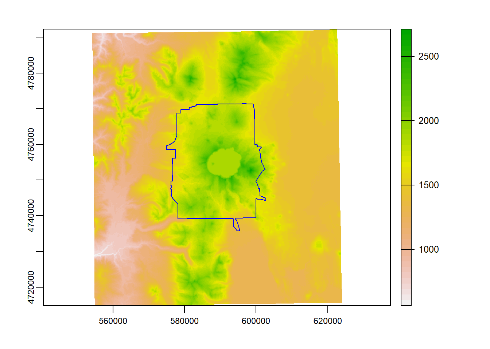
Here we use crop to crop the elevation raster to the bounding box of our Crater Lake polygon feature
elev_crop = crop(elevation_tm, vect(CraterLake_tm))
plot(elev_crop)
plot(CraterLake_tm, add=TRUE, col=NA, border='blue')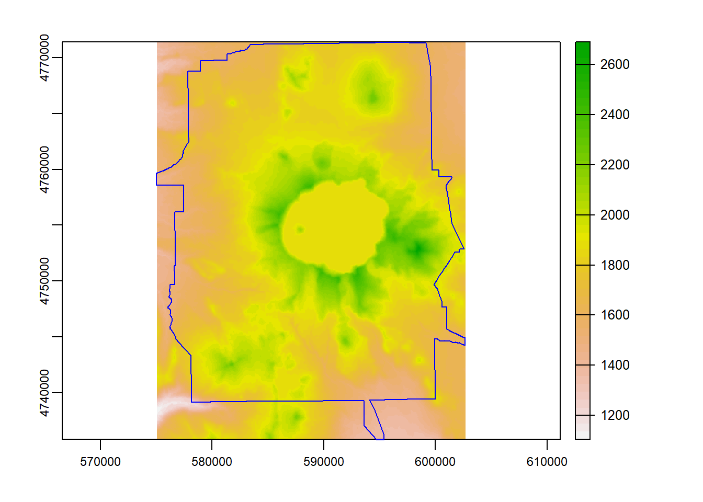
And finally we can use mask to mask the raster to just inside the polygon outline of Crater Lake National Park.
Note - if you have a large raster, it makes a HUGE difference to use crop first, then mask - mask is a much more computationally intensive operation so it will pay off to crop first then mask.
elev_mask = mask(elevation_tm, vect(CraterLake_tm))
plot(elev_mask)
plot(CraterLake_tm, add=TRUE, col=NA, border='blue')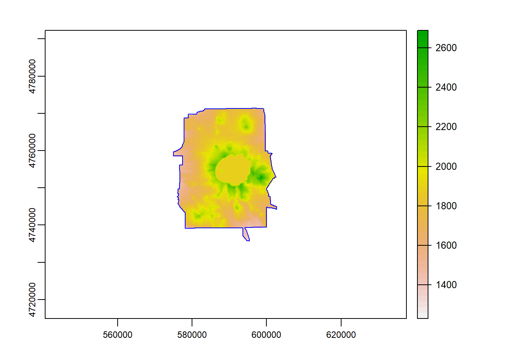
5.3.3 Map Algebra
We can divide map algebra into a couple of categories:
- Local - per-cell operations
- raster calculator
- replacing values
- reclassifying
- calculating indices
- Focal (neighborhood operations) - summarizing output cell value as the result of a window (such as a3 x 3 input cell block) Zonal operations - summarizing raster values for some zones (either another raster or a vector feature) Global - summarizing values over entire raster(s)
5.3.3.1 Local Operations
Say we want to convert our elevation raster from meters to feet:
elev_feet = elevation_tm * 3.28084
elev_feet## class : SpatRaster
## dimensions : 983, 885, 1 (nrow, ncol, nlyr)
## resolution : 78.76912, 78.76912 (x, y)
## extent : 554177.8, 623888.5, 4714846, 4792276 (xmin, xmax, ymin, ymax)
## coord. ref. : +proj=tmerc +lat_0=0 +lon_0=-483.2226562 +k=0.9996 +x_0=500000 +y_0=0 +datum=WGS84 +units=m +no_defs
## source : memory
## name : srtm_12_04
## min value : 1853.287
## max value : 8890.139Our max value is 8890, which makes sense - the high point in Crater Lake National Park is Mount Scott at 8,929’.
What if we want to make elevation bins, or classify some elevations as NA with our elevation raster?
reclass <- matrix(c(0, 500, 1, 500, 1000, 2, 1000, 1500, 3, 1500 , 2000, 4, 2000, 2700, 5), ncol = 3, byrow = TRUE)
reclass## [,1] [,2] [,3]
## [1,] 0 500 1
## [2,] 500 1000 2
## [3,] 1000 1500 3
## [4,] 1500 2000 4
## [5,] 2000 2700 5elev_recl = classify(elevation_tm, rcl = reclass)
plot(elevation_tm)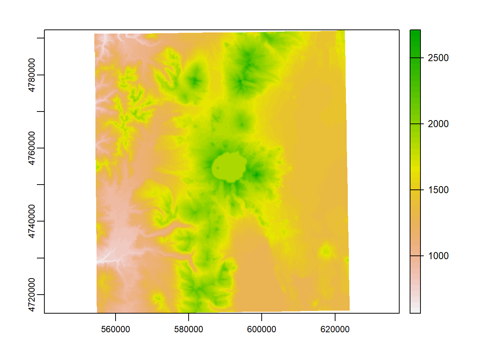
plot(elev_recl)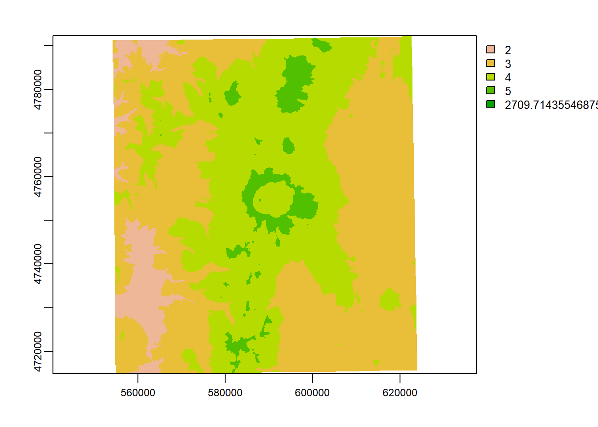
elev_new = elevation_tm
elev_new[elev_new > 2000] = NA
plot(elev_new)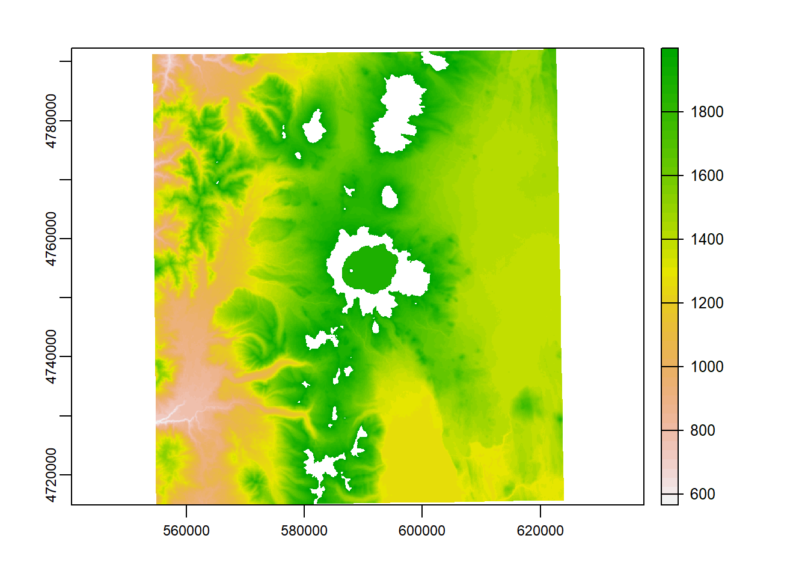
5.3.3.2 Focal Operations
A simple focal window operation
elev_focal_mean = focal(elevation_tm,
w = matrix(1, nrow = 25, ncol = 25),
fun = mean)
plot(elev_focal_mean)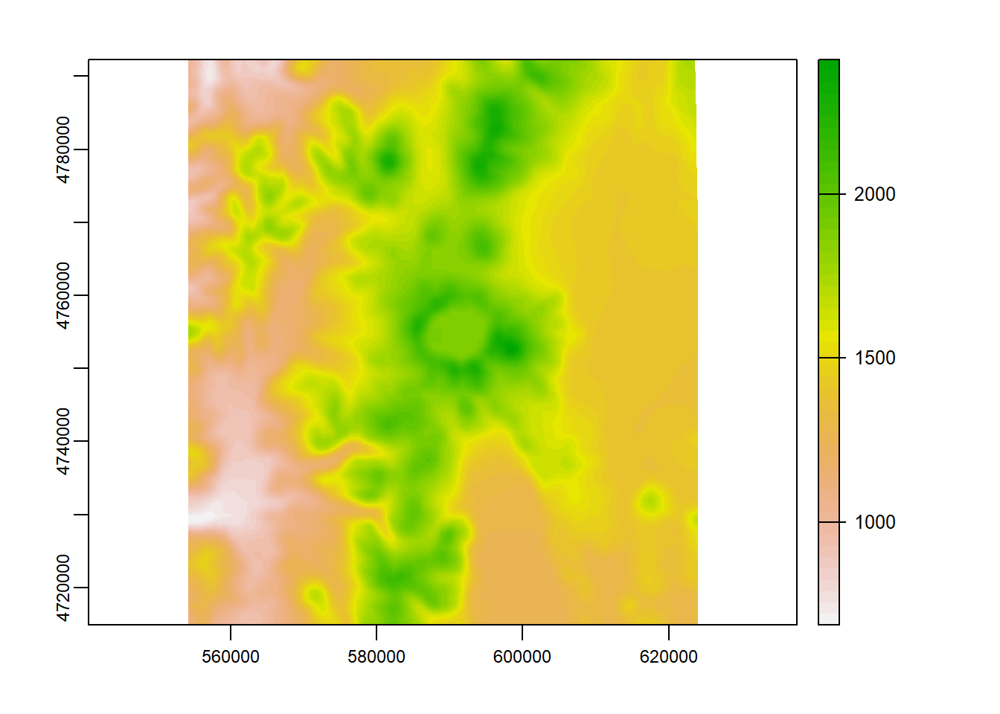
5.3.3.3 Global Operations
terra::global(elev_mask, fun="mean", na.rm=TRUE)## mean
## srtm_12_04 1849.695terra::global(elev_mask, fun="sum", na.rm=TRUE)## sum
## srtm_12_04 2217117915.3.3.4 Zonal Operations
srtm_path = system.file("raster/srtm.tif", package = "spDataLarge")
srtm_path## [1] "C:/Users/mweber/R/library/spDataLarge/raster/srtm.tif"srtm = rast(srtm_path)
srtm## class : SpatRaster
## dimensions : 457, 465, 1 (nrow, ncol, nlyr)
## resolution : 0.0008333333, 0.0008333333 (x, y)
## extent : -113.2396, -112.8521, 37.13208, 37.51292 (xmin, xmax, ymin, ymax)
## coord. ref. : +proj=longlat +datum=WGS84 +no_defs
## source : srtm.tif
## name : srtm
## min value : 1024
## max value : 2892nlcd = rast(system.file("raster/nlcd2011.tif", package = "spDataLarge"))
srtm_utm = project(srtm, nlcd, method = "bilinear")
srtm_zonal = zonal(srtm_utm, nlcd, na.rm = TRUE, fun = "mean")
srtm_zonal## nlcd2011 srtm
## 1 11 2227.060
## 2 21 1713.980
## 3 22 1642.077
## 4 23 1569.632
## 5 31 1854.069
## 6 41 2361.121
## 7 42 1867.068
## 8 43 2500.253
## 9 52 1650.966
## 10 71 1644.359
## 11 81 1284.106
## 12 82 1417.671
## 13 90 1254.168
## 14 95 1909.590